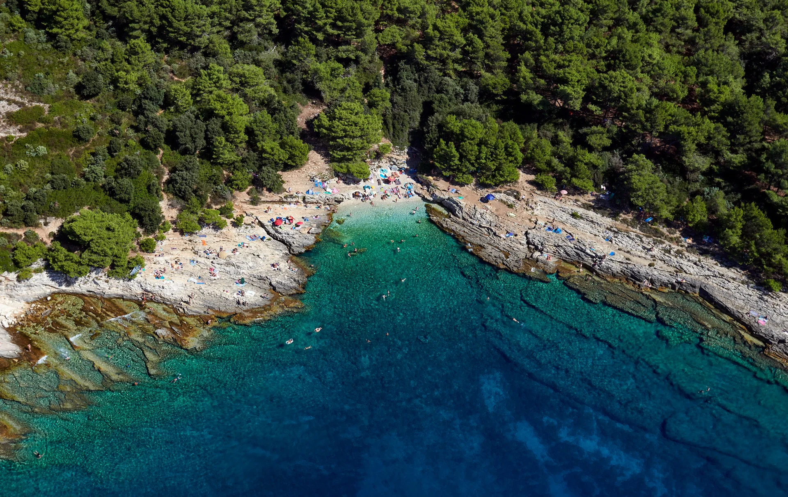

Cape Kamenjak
Cape Kamenjak
Cape Kamenjak is a protected area at the southern tip of Istria, about 5 minutes by car from Vila Sanja. The cape has rocky and pebble coves, cliffs, walking paths and beach bars.
View Cape Kamenjak on map
Entry & Parking
Pedestrians and cyclists enter for free. Vehicles require a paid day-ticket, collect it at the entrance barrier (check the current season's prices at kamenjak.hr). The road inside the park starts as asphalt then turns to unpaved macadam; the speed limit is 20 km/h. Parking areas are signed near every beach, and there is a large car park at the Safari Bar.
- Pick up a map at the entrance, it shows every cove, bar and facility
- Internet signal inside the park is unreliable, download an offline map beforehand
- The gate opens early in the morning; arriving before 10 AM on peak summer days means far less crowds

Rocky & Pebble Coves
Most of Kamenjak's beaches are rocky with small white pebble sections, typical Istrian karst coastline. The water is exceptionally clear and deep close to shore, with visibility of several metres on calm days. Pictured on the image is our favourite beach, Pinižule.
Water shoes are strongly recommended for comfortable entry and exit on rocky coves.

Mali Portić - The Sandy Beach
The only true sandy beach on the cape. It is small and naturally shaded, with a beach bar right on site. Popular with families with young children, arrive early to secure a spot in peak season.
One of the few spots on Kamenjak where you don't need water shoes.
View Mali Portić on map
Cliff Jumping Spots
The cape has cliffs of varying heights used for jumping into the sea.
Always check the water depth below before jumping. Never dive head-first from any cliff.

Family-Friendly Spots
Several shingle coves offer gradual entry suitable for children. Look for beaches near the Safari Bar area and Mali Portić. The shallow, calm water on the western side of the cape is generally gentler than the exposed eastern cliffs.
Pick up the entrance map, it marks the gentlest beaches with icons for families.

Safari Bar
View on mapSafari Bar is by the sea, surrounded by vegetation. It has wooden tables and views of the Adriatic.
- Order the cheesecake early, it sells out fast
- Large rope swings great for photos
- Dog-friendly with water fountains on site
- Large parking lot nearby, easiest spot to drive to
- Sea views at sunset

Rocky coves
The cape has limestone cliffs and rocky coves. Access to some coves involves walking over uneven rocks.
Bring water and food; remote coves have no facilities.

Dinosaur Footprint Trail
View on mapA 15-20 minute walking trail through forested terrain leads to fossilized dinosaur footprints preserved directly in the coastal rock. Educational displays along the route explain prehistoric life in Istria.
The path is uneven and not suitable for strollers. Wear proper shoes, flip-flops won't do.
Swimming & Snorkelling
The water around Kamenjak is among the clearest in the Adriatic. Visibility of several metres is normal. Bring a snorkel mask, the rocky seabed is home to sea urchins, fish, and occasional octopus.
Kayak & SUP Rentals
Kayaks and stand-up paddleboards can be rented on the cape. Some coves are accessible from the sea.
Cycling
Cycling into the park is free. The terrain is challenging in places, macadam roads and some hills, so a hybrid or mountain bike works best. Go early in the morning to avoid the midday heat. Good fitness required.
Aqua Park
An inflatable water park is set up seasonally on the cape, great fun for children and teenagers. Check the park entrance for the current season's schedule and location.


Cape Kamenjak is a protected nature park not just for its coastline but for its extraordinary biodiversity. Please stay on marked paths and never pick plants.

Extraordinary Flora & Fauna
- 30+ orchid species, including two endemic to this cape. Spring is the best time to spot them in bloom.
- ~50 butterfly species, one of the richest butterfly habitats in Istria. Look in sunny clearings between the pines.
- Shark eggs (mermaid's purses), leathery black pouches sometimes washed ashore, a sign of healthy marine life nearby.
- Seabirds & red squirrels, various seabirds nest along the cliffs; squirrels are occasionally spotted in the pine woodland.
All plants on the cape are legally protected, please leave everything as you find it.
Sun Protection
Most coves have little or no shade. Bring high-factor sun cream, a hat, and a beach umbrella. Avoid the beach between 12:00 and 15:00 in July and August.
Footwear
Water shoes for rocky beach entry, and proper walking shoes if you plan to do the Dinosaur Trail or explore the interior paths. Flip-flops are fine for the bars.
Connectivity & Maps
Mobile signal is weak or non-existent in many parts of the cape. Download an offline map before you arrive and grab a paper map at the entrance barrier.
Best Times to Visit
Early morning and late afternoon are usually cooler. Weekdays can be less crowded than weekends in July and August.
What to Bring
- Plenty of water
- Snacks from the village
- Waterproof phone case
- Snorkel mask
- Beach umbrella
Getting There from Vila Sanja
The entrance to Cape Kamenjak is approximately 5 minutes by car from Vila Sanja. Follow signs for "Cape Kamenjak" from the village. Cycling is possible but requires fitness, the route inside the park has rough terrain.